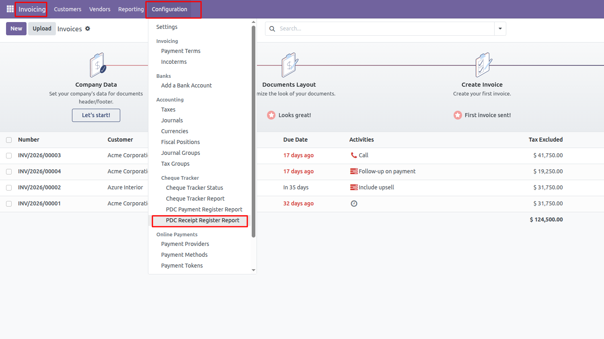
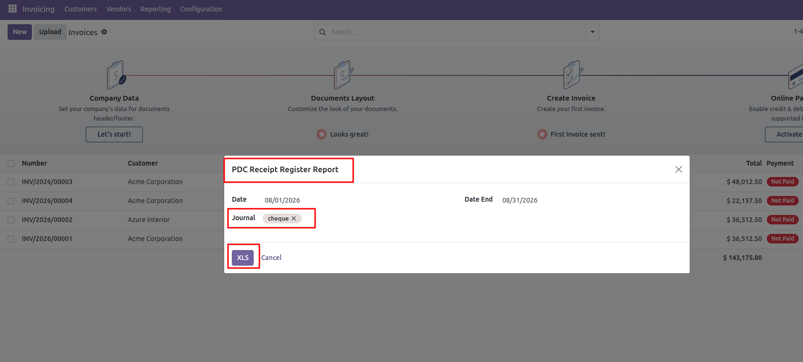
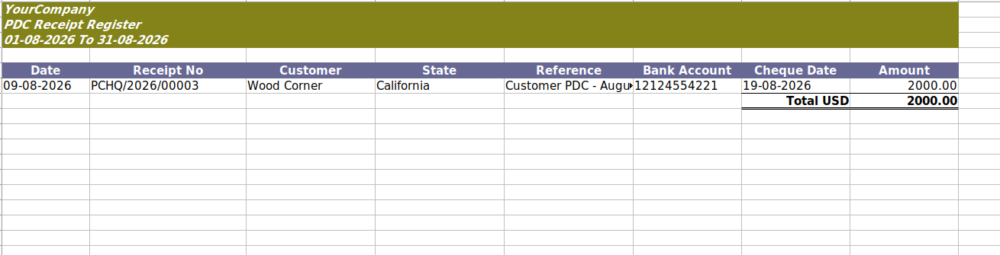

PDC Payment Register Report is an Odoo Accounting reporting module that generates an Excel (XLSX) report for outgoing Post-Dated Cheque (PDC) payments.
It allows accounting users to filter PDC payments by date range and bank journal and export payment details including vendor, reference, bank account, cheque date, and amount.
Important: This module depends on the Cheque Tracker Alerts module.
The Cheque Tracker Alerts module must be installed before installing and using the PDC Payment Register Report.
The Cheque Tracker Alerts module is available on the Achaodoo Odoo Apps Store.
The PDC Payment Register Report is designed to work together with the Cheque Tracker Alerts module.
The report uses cheque tracker information from the payment and includes payments whose configured cheque tracker status requires an alert.
This provides a simple way to generate a register of PDC payments that are being tracked through the cheque tracker functionality.
After installing the required modules, the report can be accessed from the Odoo Accounting application.
Navigate to:
Accounting → Configuration → Cheque Tracker → PDC Payment Register Report

The report wizard allows users to select the required reporting period and bank journals before generating the Excel report.

Click the XLS button to generate the PDC Payment Register in Excel format.

The generated Excel report contains the following information:
The Excel report provides a clear payment register that can be used by accounting teams for reviewing outgoing PDC payments.
Each payment displays the vendor, payment voucher number, reference, bank account, cheque date, and payment amount.
This module is developed by Achaodoo and is available on the Odoo Apps Store.
The required Cheque Tracker Alerts module is also available from the Achaodoo Odoo Apps Store.
View Achaodoo apps on the Odoo Apps Store
Achaodoo specializes in Odoo ERP development, customizations, integrations, technical consulting, and training. We develop practical Odoo modules and solutions for businesses and Odoo developers.
Need assistance or have questions about this module?